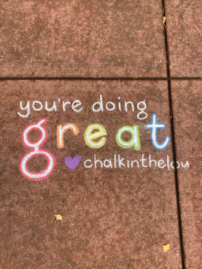

cigarettes
this is a photograph of a a pile of cigarettes on the corner of state street and ida b. wells drive for my first semester photographic practices 101 class. all four of these photos are from that assignment.
umbrella
i took this picture of the inside of my umbrella, that later broke from the weather, in my dorm room. this was my second favorite photo from that assignment because i liked how the shadows led to the bright center.
caution
this photo is of the bottom of one of the square poles behind the university center that was covered in stickers. that area behind the uc is one of my favorite places to photograph because there's so much going on back there.
chicago
this is a picture of a section of one of the murals on wabash street. i was actually out with my freshman year roommate taking pictures of her for the assignment and randomly thought to take this close up.